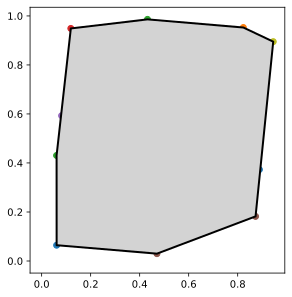

Computing a Convex Hull¶
[1]:
import skgeom as sg
from random import random as r
[2]:
points = []
for i in range(25):
points.append(sg.Point2(r(), r()))
[3]:
def pairwise(iterable):
"s -> (s0,s1), (s1,s2), (s2, s3), ..."
a, b = itertools.tee(iterable)
next(b, None)
return zip(a, b)
[4]:
from skgeom.draw import draw
import itertools
draw(points)
chull_points = sg.convex_hull.graham_andrew(points)
chull_poly = sg.Polygon(chull_points)
draw(chull_poly)
